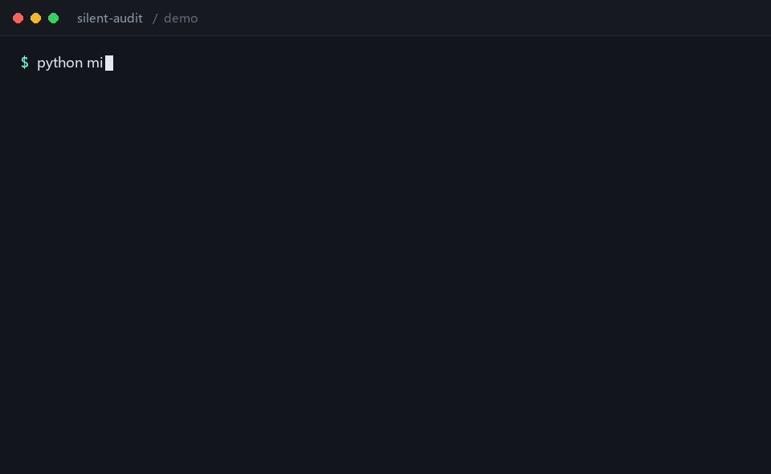

退出码 0，不抛异常，不留日志 —— 你只有事后翻 git diff 才会发现。
silent-audit 把「说干完了」和「真干了」分开核对，
给每次运行打一个可信度分数，并指出写坏的那一行。

真实运行：三个命令，就是全部操作
# 装：零依赖，只要 Python 3.9+ pip install silent-audit # 用：把要检查的脚本交给它 $ silent-audit run migrate.py --watch ./data # 不想装，直接跑 $ python -m silentaudit run migrate.py --watch ./data
| 看什么 | 从哪来 |
|---|---|
| 它声称做了什么 | 脚本的 stdout / stderr，解析「处理 N 行」这类句子 |
| 它实际调用了什么 | sys.addaudithook 记录的 open / rename / unlink / subprocess，不改脚本一个字符 |
| 文件到底变没变 | 运行前后逐文件 md5，还能分出「写了但内容一样」 |
三者对不上，就报警；全都对得上，报 10.0 —— 它不抓 bug，它抓「不可信的成功」。
| 零变更 | 声称成功，磁盘上没有任何文件变化 |
| 自报 0 项 | 「处理完成：0 行」却当成功 |
| 无效写入 | 文件被写过，内容逐字节与运行前相同 |
| 写空壳 | open(...,"w") 之后写入被跳过，40KB 报告变 0 字节 |
| 写错地方 | 该覆盖 data.csv，结果写成 data(1).csv |
| 静默跳过输入 | 读了 7 个文件，只产出 6 个，第 7 个异常被 continue 吞掉 |
| 子进程悄悄失败 | 调 ffmpeg 失败，忘了 check=True，仍然打印「完成」 |
| 只读了没写 | 读 500 次、写 0 次，却报告处理完成 |
（还有几项：部分失败被吞、体积骤减、写到 watch 之外、退出码与输出矛盾、在副本里连跑两遍结果不一致。）
$ silent-audit replay migrate.py --watch ./data 不可复现：同样的起点，两次结果不一样 第 1 次 声称 5 · 变了 3 个 · 退出码 0 第 2 次 声称 2 · 变了 1 个 · 退出码 0 ✗ 同样的输入，它两次报的数字不一样（5 → 2）
先把目录镜像成副本，每次运行前重置回同一起点 —— 否则「两次不同」是必然的，什么也证明不了。整个过程不碰你的原文件。